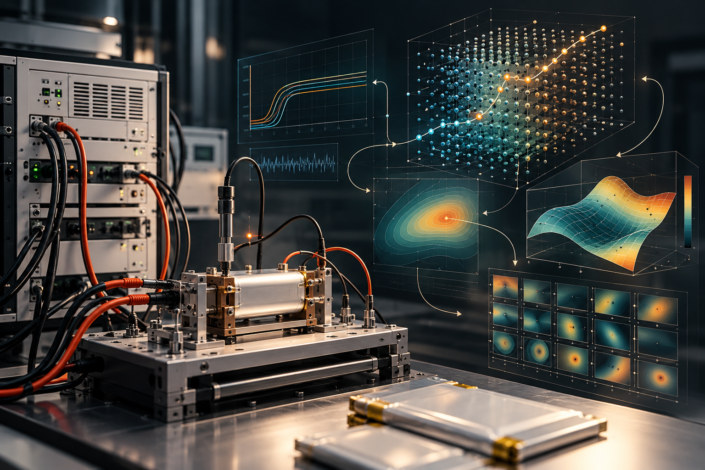

PATENT / WO2022164400A2
AI-designed experiments for better testing
Test method performed with design of experiment created by an artificial intelligence

Applies artificial intelligence to the design of experiments used in testing. Rather than relying solely on manually selected test conditions, the approach uses an AI-created experiment design to structure the test process and support more effective evidence gathering.
Why it matters
Choosing informative test conditions can reduce wasted experiments and improve how quickly engineers identify useful models of complex systems.
At a glance
Technology area: AI for engineering · Test design · Experimentation.
This is an executive-level summary, not legal advice or a substitute for the patent claims. See the published record for the authoritative description, inventors and legal status.
Read patent record ↗